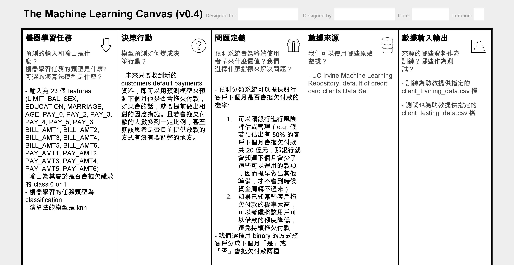
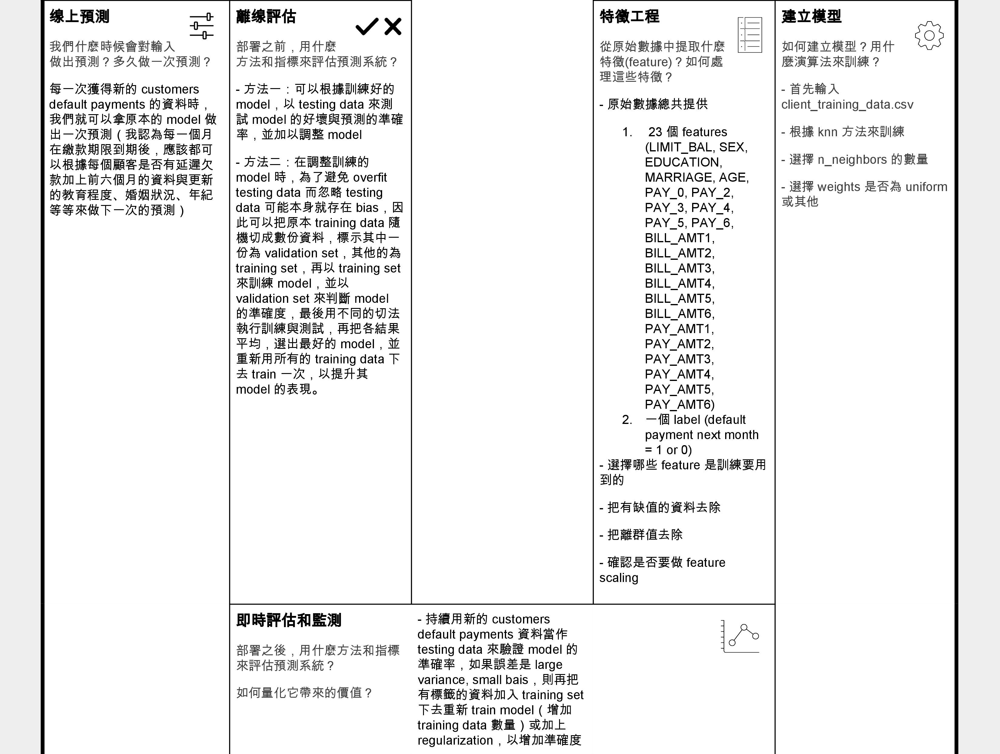
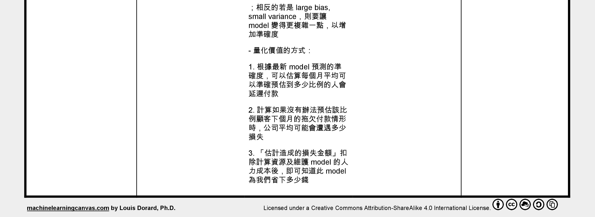
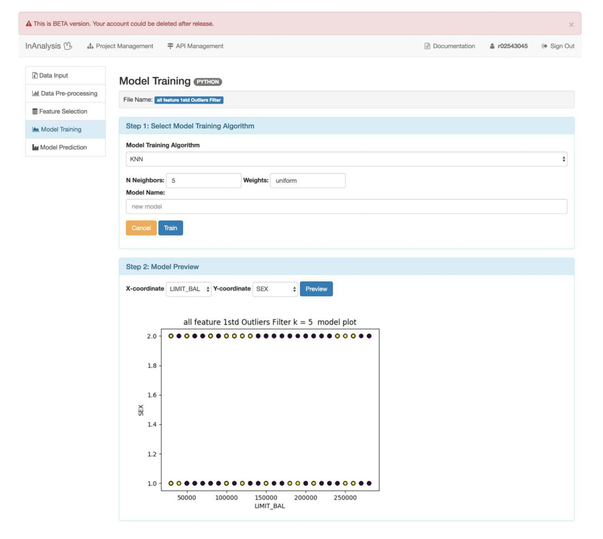
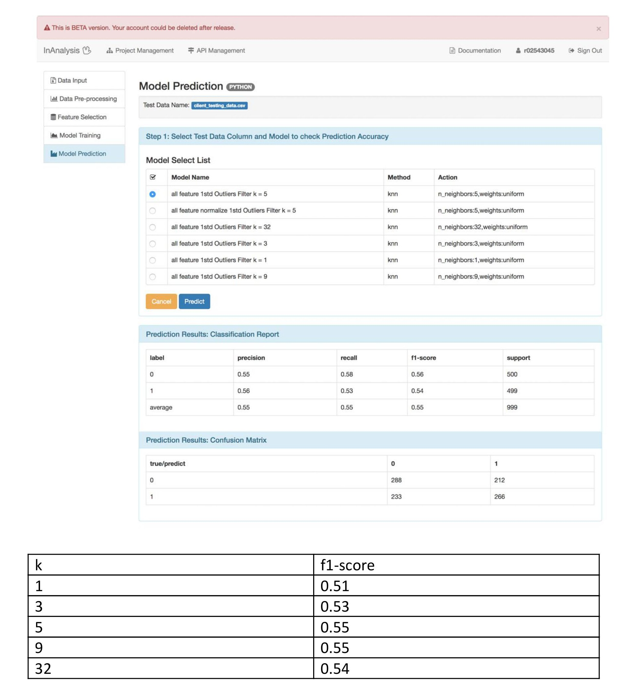

<!-- Post Content -->
<article>
    <div class="container-fluid">
        <div class="row">
            <div class="col-lg-8 col-md-10 mx-auto">
                <a href="review_index.html" class="btn btn-info btn-lg">
                    <span class="glyphicon glyphicon-menu-left"></span>Back to User Reviews List
                </a>
            </div>
        </div>
        <div class="row">
            <div class="col-lg-8 col-md-10 mx-auto">
                <div class="row">
                    <div class="col-lg-4 col-md-4 mx-auto">
                        <section class="main">
                            <ul class="ch-grid">
                                <li>
                                    <a href="review_1.html">
                                        <div class="ch-item ch-img-1">
                                            <div class="ch-info">
                                                <h3>辛丞鈞</h3>
                                                <p>臺大應用力學研究所</p>
                                            </div>
                                        </div>
                                    </a>
                                </li>
                            </ul>
                        </section>
                    </div>
                    <div class="col-lg-8 col-md-8 mx-auto">
                        <h2 class="section-heading">Classification學習紀錄</h2>
                        <hr>
                        <h3>辛丞鈞 | 臺大應用力學研究所</h3>
                        <p>
                            Inanalysis讓完全不會寫程式的人，也能輕鬆使用，做機器學習
                        </p>
                    </div>
                </div>
            </div>
        </div>
        <div class="row">
            <div class="col-lg-8 col-md-10 mx-auto">
                <h2 class="section-heading">The Machine Learning Canvas</h2>
                <hr>
                
                
                

                <h2 class="section-heading">Training result</h2>
                <hr>
                <p>這次使用的是 kNN (k Nearest Neighbors) algorithm，大致上的方式為其在用來做 classification 時，將某物件依照其最接近的其他 k 個物件中，哪個
                    class 的最多，即將該物件分到該 class。
                    由於我們的 classification 是 binary 的，因此 k 不能選擇偶數，不然會有可能碰到剛好兩個類別的數量相同的情況，已導致難以劃分。（假若不是 binary 的分類，則 k
                    不能是
                    classes 數的倍數，不然一樣會有上述的情況發生。）
                    而我的 k 值嘗試過 1, 3, 5, 9, 32，其中 1, 3, 5, 9 為隨機挑選，而選 32 是因為我發現有研究論文建議 k 值的取法為 training examples
                    數量的平方根，因此我將 training 999 筆資料做平方根後得到 32。（上述論文：Lantz B. Machine learning with R. 2nd ed.
                    Birmingham:
                    Packt Publishing）</p>>
                
                <p>我覺得由 training 結果的頁面比較難以瞭解實際 train 的好壞，因為我們 model 的 features 很多，實際的 variable 不只二個，但是 model preview
                    只能看二維的 plot，這樣會導致就算是在任意二維空間不同 class 間看起來分的不開，但在實際的高維空間還是可能是分很開的，所以我覺得如果在這裡可以看到訓練完的 model 在
                    training
                    set 上的 accuracy，這樣才比較好判別訓練的成果如何。</p>

                <h2 class="section-heading">Prediction result</h2>
                <hr>
                
                <p>1. 在不同 k 值間的嘗試後，發現最佳的 k 並不等於 32，反而是在 k = 5 or 9 時有最高的準確率 55%，推論在不同的訓練 case
                    間還是會有不同的變因，因此難以事前真的準確預估最佳的
                    k 值。
                    2. 此外我有測試 k = 5有沒有使用 feature scaling 的差別，結果使用 feature scaling 後反而正確率下降到 50%，後來發現原因可能是來自於一開始
                    training
                    data 做 feature scaling 去 train model後，testing data 並沒有可以選擇做 feature scaling 的地方，因此用這樣的 testing
                    data這樣跑出來的 prediction應該算是有問題的，不能真的反應這個 model 的好壞。
                    3. 由於用隨機猜的機率都有 50%，因此我的 model 55% 的準確率應該算是偏低，我推測可能的原因有：
                    a. 若 testing data 可以做feature scaling，準確率應該是會有所提升
                    b. 由於在 UCI 的原始說明網頁就有提到，在 data mining 的 6 種方法
                    中，artificial neural network 是唯一可以精準預測真實拖欠付款機率的
                    方法，因此可能 kNN algorithm 並沒有那麼適合這項預測。
                    4. 如果可以得知我的訓練 model 在 training set 上的準確率，可能會比較有方向可以著手進行改善：假若 training accuracy 很高，但 testing
                    accuracy
                    很低，即為 overfitting，其誤差是來自 large variance, small bais，我們可以加上 regularization，以增加準確度；反之若是 training
                    accuracy 很低，則有可能為 underfitting，其誤差是來自 large bias, small variance，則要讓 model 變得更複雜一點，以增加準確度。</p>
                <a href="review_index.html" class="btn btn-info btn-lg">
                    <span class="glyphicon glyphicon-menu-left"></span>Back to User Reviews List
                </a>
            </div>
        </div>
    </div>
</article>